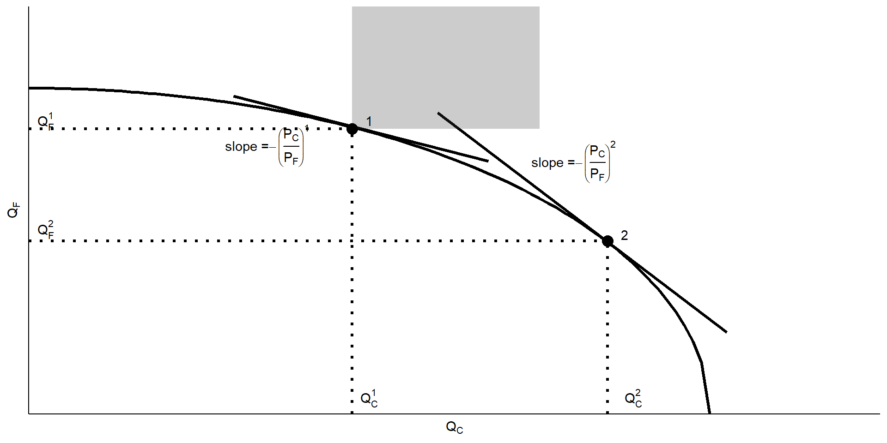

Specific factor and Income Distribution
ECES905205 pertemuan 3
I Made Krisna Gupta
12 September 2022
The Repeal of the Corn Law
- An effort to reduce food price
- tarif grains sampe 80%
- Repealed under Robert Peel ruling in 1846.
- pivotal for UK manufacturing transformation.
- Birth of the economist magazine
- Our model today explains this phenomenon.
Kemarin
Kita telah mempelajari tentang Ricardian model, model paling primitif di literatur perdagangan internasional.
gains from trade(in a purely economic sense) datang dari specialisasi dan keunggulan komparatif.
Model ini memiliki asumsi yang sangat kuat, salah satunya adalah faktor produksi yang bebas berpindah antara satu industri ke industri lain.
- Today we’re relaxing this assumption.
Hari ini
- specific factor model
Specific factor model
2 Sectors i: Cloth (C) and Food (F)
3 factor j: Labor (L), Terrain (T), and Capital (K).
- Labor can move between sectors
- T can only used to produce F, K only C.
PPF
Karena sekarang ada 2 faktor, kita perlu memikirkan kembali PPF-nya.
Karena hanya ada 1 faktor yang bergerak, tiap sektor hanya bisa meningkatkan produksi dengan cara nambah \(L\).
- \(T\) tidak bisa ditambah karena mau dapat dari mana?
- begitupun \(K\)
Bisa kita bilang bahwa ini analisis jangka pendek.
- Di jangka panjang, \(K\) bisa naik dari investasi.
- Di jangka puannnnjjjaaaangggg, \(T\) bisa naik dari reklamasi (ya investasi juga sih…)
- Di jangka panjang, \(L\) naik?
PPF
- Tapi intinya, karena hanya 1 faktor yang bisa naik/turun, efisiensi produksi faktor tersebut mengalami diminishing returns
- bayangin di kantor anda nambah pegawai tapi ga nambah komputer?
- nambah petani tapi ga nambah lahan?
- Artinya, produktivitas pekerja (marginal product of labor (MPL)) turun seiring \(L_i\) bertambah.
- konsekuensi di sektor satunya, MPL naik seiring \(L_{-i}\) turun.
PPF dan MPL
PPF dan MPL sektor C
Note: industri F juga identik, cuma dia pake T, not K.
PPF
- Tambahan 1 unit of \(L_C\) akan meningkatkan \(Q_C\) sebanyak \(MPL_C\).
- Semakin naik \(L_C\), \(MPL_C\) semakin turun.
- Artinya, \(Q_C\) tetep naik, tapi ga sebanyak pas \(L_C\)-nya sedikit.
- Setiap kenaikan \(L_C\) by 1 unit, \(L_F\) turun by 1 unit.
- artinya, kenaikan \(Q_C\) bersamaan dengan penurunan \(Q_F\).
\[L_C+L_F=L\]
PPF
dengan kata lain, untuk menaikkan \(Q_C\) by 1 unit, \(Q_F\) harus turun by \(\frac{MPL_F}{MPL_C}\)
Dari sini, kita dapatkan hubungan antara \(Q_C\) dan \(Q_F\) yaitu:
\[ \text{Slope of PPF}=-\frac{MPL_F}{MPL_C} \]
PPF
Berapa harus produksi?
- A profit maximizing firms will want to employ until:
\[ MPL_C \times P_C = w \]
- Jika udah di posisi tersebut lalu firms ambil 1 \(L_C\) lagi, maka \(MPL_C\) akan turun.
- Jika \(P_C\) ga berubah tapi \(MPL_C\) turun, maka \(MPL_C \times P_C < w\)
- alias ga nutup ongkos produksi.
Berapa harus produksi?
- Industri F punya employment rule yang sama. Akibatnya:
$$ MPL_C P_C = MPL_F P_F = w
\[ \]
-=-=w= $$
- MPL merupakan ukuran teknologi/produktivitas.
- harga ditentukan oleh preference.
- Preference (by extension, prices) is given.
Production status quo
Production status quo
- Dengan bentuk market yang sama-sama diminishing return, PPF akan berbentuk seperti gambar sebelumnya.
- Produksi terjadi di titik 1, di mana kurva PPF bersinggungan dengan price ratio.
- beda dari pure ricardian yg rasio produktivitasnya konstan (PPF-nya linear).
- Grafik 4-kuadran dapat digunakan untuk mengilustrasikan fungsi ppf ini.
Labor market
- pasar tenaga kerja akan bergerak tergantung MPL dari kedua industri.
- equilibrium tercipta berdasarkan \(MPL_i \times P_i\), di mana employment akan berhenti di sebuah level \(w\).
- Dinamika ini akan berubah jika ada pergeseran di teknologi (MPL) ataupun rasio harga \(\left(\frac{P_C}{P_F}\right)\).
Labor market
Note bahwa total L adalah fix. Kiri adalah \(L_C\), kanan adalah \(L_F\)
Increase in both price
- Katakanlah negara ini trade, dan di pasar internasional, \(P_C^*=1.1P_C\) dan \(P_F*=1.1P_F\)
- Dengan MPL fix, maka yg kenaikan kurva \(MPL_i \times P_i\) adalah selaras dengan kenaikan \(P\)-nya.
- Karena harga kedua barang naik dengan proporsi yang sama, alokasi naker jadi tidak berubah
- hanya terjadi kenaikan gaji 10%, sama dengan tingkat kenaikan kedua jenis barang.
Increase in both price
Change in relative price
- Katakanlah negara ini terekspose international trade.
- Di pasar internasional, \(P_C^*=1.1P_C\) tapi \(P_F^*=P_F\)
- Katakanlah \(P_C\) naik 10%, tapi \(P_F\) tetap.
- Terjadi perubahan rasio harga di mana \(\frac{P_C}{P_F} \uparrow\)
- Ada kenaikan \(L_C\) dengan mengambil \(L_F\)
- inget, \(L\) secara total tetap.
- gaji naik, tapi ga sebanyak kenaikan \(P_C\).
Change in relative price
New production allocation
- Karena terjadi perubahan rasio harga, maka alokasi produksi ikut berubah.
- Ingat bahwa produksi akan terjadi di titik yang slopenya = price ratio.
- Ketika harga relatif berubah, maka produksi akan pindah ke barang yang harganya naik tersebut.
- Ingat bahwa total faktor produksi tidak berubah: T,K dan L tetap sama.
- Jika tidak ada perubahan teknologi, maka produksi hanya dapat dilakukan di PPF.
New production allocation
New production allocation
Understanding income distribution
- Jika ada perubahan relatif prices, maka akan terjadi perbedaan income distribution.
- Perbedaan ini utamanya datang dari kenaikan yang tidak proporsional: \[ \Delta P_C > \Delta w > \Delta P_F \]
\[ \frac{w}{P_C} < \frac{w}{P_F} \]
- Produsen C better off karena bikin barang yg lebih mahal dan konsumsi barang yg lbh murah.
Income distribution
- Apakah kesejahteraan pekerja naik? Tergantung preference:
- Apakah C lebih penting dari F di utility function mereka?
- Dari sisi gaji, keduanya mendapatkan gaji yang sama
- Tapi pemilik specific factor sudah jelas:
- Pemilik K lebih untung, dan pemilik T lebih rugi.
- hal ini dapat ditunjukan dengan dinamika producer surplus.
Cloth Sector
Increase in textile price
Food sector
Landlord surplus

Gains from trade
Trade benefits the factor that is specific to the export sector of each country but hurts the factor specific to the import-competing sectors, with ambiguous effect on mobile factors.
- tapi apakah kita bisa tau jika trade ini secara menyeluruh menguntungkan?
- apakah kita tau jika untungnya lebih besar dari ruginya?
- jika ya, maka secara teori kita bisa mengkompensasi loser.
Gains from trade
tanpa trade, maka konsumsi = produksi, atau
\[ D_C=Q_C \ and \ D_F=Q_F \] dengan trade, konsumsi ga harus = produksi. yang penting:
\[ P_C \times D_C + P_F \times D_F = P_C \times Q_C + P_F \times Q_F \]
Gains from trade
Budget constraint tersebut dapat kita atur ulang sehingga:
\[ D_F - Q_F = \left(\frac{P_C}{P_F}\right) \times (Q_C-D_C) \]
atau, impor F sama dengan rasio harga dikali ekspor C.
Seberapa banyak kita bisa impor tergantung seberapa banyak kita bisa ekspor.
Gains from trade
semua daerah abu-abu adalah better set
Gains from trade
- Pahami bahwa tanpa trade, konsumsi harus = produksi, alias di PPF persis.
- Pahami bahwa dengan trade, opsi jadi banyak. Tapi tentunya opsi yang masuk akal adalah opsi yang membuat kita bisa konsumsi more of both goods. Note: ini tidak tergantung di mana alokasi awal berada.
- Jika kita bisa dapat alokasi yang lebih baik, pada prinsipnya sangat mungkin dilakukan transfer.
Gains from trade
- dengan perdagangan internasional, kita bisa mengatur bundle konsumsi kita selama ia ada di jalur garis budget constraint.
- geser dari titik produksi = ekspor dan impor.
- trade opens up choices!
- alokasi yang tadinya tidak feasible menjadi feasible
- artinya, secara teori, manfaat > mudharat
- namun, hanya karena semua bisa untung tidak berarti semua AKAN untung.
Political economy of trade
- perdagangan internasional dapat merugikan immobile factor owners.
- Di dunia nyata ga harus T atau K, tapi juga labor!
- 2 alasan kenapa ekonom jarang mempermasalahkan distribus income ini:
- perubahan distribusi pendapatan dapat terjadi akibat fenomena non-trade.
- pandemi menguntungkan yang bisa WFH, data dan teknologi menguntungkan coders, etc.
- kompensasi selalu lebih baik daripada pembatasan perdagangan.
- bagaimana mengoptimalkan pendapatan negara dari trade dan mengalokasikannya untuk bantuan sosial.
Political economy of trade
- Di negara demokrasi, kemampuan mobilisasi gerakan itu penting.
- Intervensi banyak terjadi di industri yang terkonsentrasi:
- pemainnya dikit tapi ukuran ekonominya banyak.
- BUMN
- Biasanya kalau udah kepepet, pelaku industri jadi punya 1 tujuan dan better organized.
- yang untung dari trade biasanya konsumen yang bodo amatan.
Penutup
- Political economy of trade akan dibahas lebih banyak lagi di pasca-UTS.
- note bahwa ini bisa dibilang short-run model:
- in long run, L,K,T dan bahkan MPL bisa berubah.
- Minggu depan belajar Hecksher-Ohlin model.
- fokus di perbedaan sumber daya.
- Specific factor bisa mobile (longer run).